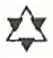
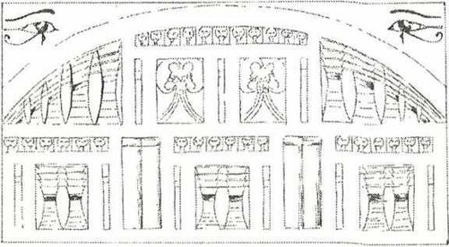
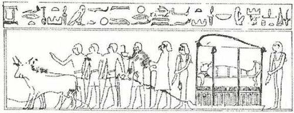

I.BAB

Evren Kendi Kendini Oluşturur ve Tanrısal Olan, Her Şeydedir
Her şey Ölüler Kitabında yazılmıştır... Çok eski zamanlarda, düzgün yüzlü Keops veya Sakkara piramitleri yapılmadan çok önceleri, Yaratılış sırlarına inisiye olmuş olan Eski Mısırlılar, Güneş’in her sabah Nout’un karnından çıkıp, her akşam batının son ışıkları yaşayanların evreninin sınırlarını belirlerken, Nout’un ağzında kaybolduğunu biliyorlardı. Ve ayaklarımızın altındaki öbür dünyada toplanmış ölüler, güneşin gece yolculuğunda, Douat’ın oniki bölgesindeki değişimlerini seyredebiliyorlardı. Ve burun deliklerinde yeniden hayat nefesini bulan ölüler, Güneş Kayığının köpek başlı maymun tapınıcılarını, büyülü kürekleri ve skarabe*, yani Khapra’dan oluşan tanrı biçiminde görüyorlardı.
*Bu böcek dilimizde “bokböceği” olarak adlandırılmaktadır.
Nil Vadisinin eski ahalisinin ölüler alemine girmeden ve Bilgiler Kitabının sayfalarını açmadan önce, onların ebediyeti olacak şaşırtıcı evrenin kapıları açılınca, ölüleri bekleyen tanrılardan birkaçını öğrenmeliyiz.
PTAAH
Ptaah var olan her şeyi yarattı. Ondan önce, ne varlık ne de yokluk vardı. Yukarıda ne uzay ne de gökyüzü vardı. Hareket eden neydi? Nerede ve kimin yönetimindeydi? Derin, dipsiz su mu vardı? O zaman ne ölüm, ne ölümsüzlük, ne de geceyi gündüzden ayıracak bir belirti vardı. BİR, nefes almadan soluyordu, kendiliğinden hareketli idi: ötesinde hiçbir şey mevcut değildi. Başlangıçta karanlıklar karanlıkları örtüyordu. Boşlukta hapsolmuş BİR, sıcaklığın gücü ile vücut buldu. (Rigveda, x, 129 Louis Renou çevirisi). Ptaah, tanrıları ve “ilkel sulara batmış” ülke olan Mısır’ı yarattı. Onun sayesinde, dünyanın başlangıcında tanrısal sözler söylendi ve tanrılar varlığı bildiler, çünkü Ptaah, Memphis tanrıbilimine göre çoğalma organları olan “yürek ve dil” idi. O zamandan, ilk kaostan sular ve yerler oluşur oluşmaz, gelecekteki ölülere vaad edilen milyonlarca yıllık yaşamın simgesi olan asanın sahibi idi.

Ruhları yargılayan Tanrılar mahkemesinin başta gelen kişisi Anubis, dünyanın yaratıldığı gün herkesin yerini saptadı ve bunu öyle bir şekilde yaptı ki herkes için her yer, zamanların sonuna kadar burada da, öbür dünyada da belirlenmiş olsun. S. Mayassis, “ölülerin ve ruhlarının bir koruyucu tanrısıdır ve bu koruma onlara yardım edip, onları arıtmaya yöneliktir,” demektedir. Ona “Kemikleri yeniden toplayan”, Alt Dünyanın “Kapı Açıcısı” da denir.
Ruhun tartılması törenlerinin tamamlanması için, ölüyü karşılayıp elinden tutarak Osiris’in karşısına götüren odur. Hareketlerin, mekanların, şekillerin, sayıların, gezegenlerin muhasebecisidir. O aynı zamanda büyü metinlerinin, her ay canavarların yutmak istedikleri ve yıldız takımları arasından Thot görünür görünmez geriye kustukları Ay’ın da koruyucusudur.
Başka tanrıların sevgili katibidir. Çünkü Yüz Kapılı Teb’de hüküm sürecek daha doğmamış firavunların isimlerini Heliopolis’in kutsal ağacının yapraklarına yazan odur. Karanlıkların ışığı olan Seth’in ışığının aksine (dünyanın uzaya uzayan gölge konisi ışığının) her ruh güneş ışığını almadan oraya dalacaktır ölülerin bedenlerini bırakır bırakmaz geçtikleri oniki burç ışığının zıttı olan o karanlık ışıktan farklı olarak, Anubis’in ışığı pırıl pırıl ve Osiris’in karşısına temiz çıkmış ruhlar için mutluluk vericidir. Bu bir ışık merdivenidir. Güneş yaratılmadan önceki ilk yaratılış ışığıdır. Kozmik yumurta, Anubis’in ışığı ile aydınlanmıştır. Yaşayanlar için şafak neyse, bu ışık da ölüler için aynı şeydir; o, onun “güne çıkışını sağlayacak ışıktır.” S. Mayassis, “Anubis’in ışığı öbür dünyaya giriş veya ruhlar dünyasına çıkıştır” demektedir.
OSİRİS
Osiris de ölülerin koruyucu tanrısıdır. Bütün doğan şeylerin simgesi olduğundan, ölüler arasındaki yeri tamdır; çünkü ölüler, galaksilerin dönendiği gök nehirlerinde ebediyen dolaşmaya başlamadan önce, belki de evren dediğimiz, başlangıç ve oluş olan ışıklı ruhların arasında, artık belleği olmayan zamanda gelişmeye başlamadan önce, ikinci bir defa daha doğacaklardır. Bu dünya uzayın tanınmaz bedeninde ölü bir hücre, ölü bir dünya haline gelinceye kadar, Osiris yeryüzünde biten her buğday tanesinde, ne kadar ilkel olursa olsun her hayat parçacığında, ölülerin “kalbi ve yüzü” olunca onlara yöneltilen her bakışta, Nil’in taşma zamanındaki ter gibi, ellerinden ve ayaklarından süzülen her su damlacığında, yeniden, çoğalarak doğacaktır.
Osiris, yeryüzü veya uzayda olsun, yaşamsal etkinliktir; bir tanrının görünür şekli altında ölülere yeniden canlanmayı vaad etmek için ve sonuçta Osiris’in görkemi ile yeniden canlanacaklarını vaad etmek için onların dünyasına iner. Çünkü kendini temize çıkarmış her ölü, tıpkı toprağın bağrına düşmüş bir buğday tanesi gibi, evrenin derinliklerinde bir hayat tomurcuğudur. Osiris’in, destansı devirlerin ilk firavununun zaferi, kutsal kenti olan Abydos üzerinde yeniden parlasın, ölülerin koruyucusu tanrı, yaşayanların nefesini ebediyen beslesin... Daima, aydınlık kabirlerinde, ölüler “Gökyüzünün Anası” tanrıça Nout’un kollan arasındayken, Osiris’in etkileri onların organlarını canlandırsın, kemiklerini birleştirsin, büyü merasimlerine göre çapraz sarılmış sargıları olan ölüler Osiris’te kişileşsin, yeniden doğarak. O’nu çoğaltsınlar, ka’ları ezoterik kopyaları İalou alanlarının güzelliklerine açılsın.
Osiris’in karısı, büyücü İsis ağlasın; o İsis ki insanlara bedenlerinin çürümemesi için ne yapmak gerektiğini, iç organları ayrılıp vazolara konulduktan sonra bedenin nasıl mumyalanacağını öğretti; o İsis ki, kardeşi Seth tarafından öldürülmüş sevgilisini, bütün Mısır’a dağılmış ölüsünü, parçalanmış erkeklik organı hariç; çünkü onu nehirde bir balık (oxyrhynque) yutmuştu onüç organını bulduktan sonra diriltmişti. Abydos’taki ünlü nekropolde (ölüler kenti) Osiris’in lahitinin üzerinde, bir yeniden dirilme sahnesini canlandıran nefis bir kabartma vardır. Sanatçı, “Ölüler Kitabı’nda yazılı olanı elindeki materyele çok güzel bir biçimde yansıtmıştır. Burada, firavun I. Seth’in dirilişini görürüz. Kral, lahitin üzerine uzanmıştır. İsis sağında, Horus solundadır ve ikisi de ayaktadır. Firavunların başlarının üzerinde, uçan tanrıların simgesi Mout* Akbabası, Asur’da, Asurbanipal’in başı üzerindeki gibi, kanatlarını kapatmış, sabit bakışlarla kralın yüzünü gözetlemektedir. Çünkü Abydos gecesinde, firavun ölümsüzleşecektir. Zamanında İsiris’in olduğu gibi.
* Mout: Gerçek
Ranın oğlu firavun gibi, Osiris ile doğacak ölü için de aynı şey olacaktır. Piramit metinlerinde yazıldığı, I. Seth’in dirilişini gösteren kabartmada olduğu gibi, İsis ve Horus ölüyü kutsayacaklar ve ona “Kalk ve uyan!” diyeceklerdir. Ve ölüler yeryüzünü uzaklaşan ölüler gibi değil, gitmekte olan canlılar gibi terk edeceklerdir. Bu ölü firavunlar Osiris’e doğru gidecekler ve defalarca dinledikleri rahibin sözlerini hatırlayacaklardır: “Osiris, sana doğru yükseliyorum... Temizliğim ellerimdedir. Tanrıça Tefnout’un önünden geçtim ve tanrıça beni temizledi... Ben bir rahibim ve bu mabedin rahiplerinden birinin oğluyum...” Defalarca işittiğini yeniden hatırlayacaklardır: “Bağ çözüldü, bu kapıyı geçmek için bilekler serbest kaldı. Üstümdeki bütün kötülükleri yere attım.”
Hepsi Osiris’e doğru gideceklerdir. Yüzleri yeniden hayat ve güç bulacaktır; burun delikleri kuzey rüzgarlarının serinliğini duyacaktır. Gökyüzünün İalou tarlalarında buğdayların büyüdüğünü göreceklerdir. Gecenin Kapıları’nın önünde bırakmış olacakları yaşayanlar, kutsanmış ruhlara her yönden adaklar getirecekler ve bunları kutsal sularla ıslatacaklardır. Evet, hepsi birbiri ardından dirilecek, kalbi çarpmayan Osiris’in önünde ebediyen duracaklardır. İsterlerse ve eğer doğru bulunurlarsa, her gece öbür dünyanın oniki bölgesinde yüzen kayıkta oturabilecekler, tanrısal Kediyi Heliopolis’in kutsal ağacını yardıktan sonra, iç organlarının ışıklı tayflar önünde, Üst İdareciler’in sıralanmasını görecekler ve şöyle haykıracaklardır: “Ey! Güçlü Osiris! Biraz önce doğdum. Bana bak, az önce doğdum!”
SETH
Seth, hayvan başlı kötülük prensi, karanlıkların akıl almaz kaynaşmasını bizi taşıyan dünyanın altında düşünülen bu harabiyet bölgelerindeki bozucu her şeyi kişileştirir. Kendisine “pislik attığı” için Horus onun testislerini koparmış, böylece ondan gücünü ve erilliğini almıştır. Mısırlılar Coptos’ta, Seth’in erkeklik organını ellerinde tutan Horusun bir heykelini dikmişlerdir. Silueti titremeden göz önüne getirilemeyen Seth, ünlü lanetlemelerle davet edilir. Bununla birlikte, birçok düşman ülkeyi yenen II. Ramses, bir tapınağın kapısına, kendisinin Seth’in dostu olduğunu yazdırmıştır. Siyah domuz Seth, her aydönümünde, Ay’ı yutar; çünkü Osiris’in ruhu oraya sığınmıştır. Bu Horus-Seth çatışması, bu evrensel mitos, iyi ve kötü arasındaki sonsuz savaştır. Dünyanın başlangıcından beri şu veya bu biçimde ortaya çıkar. Bazen şurada yatışır, bazen burada alevlenir. Ölmüş eski zamanların gecesinden ve gelecek zamanlarda, insanları yapan tanrıların ortaya çıkardıkları bazen saf olmayan bu alev, sonu gelmez ikiliktir.
HORUS
Yirmi değişik şekil altında Horus, Mısır panteonunun (tanrılar gurubunun) en büyük tanrılarındandır. O, Louvre Müzesinde görebileceğimiz, firavunun önünde zarif kutsama jestini tekrarlayan atmaca başlı (hieracocephale) Horus’tur. Edfou’da, kutsalların kutsalının tapmak kapısının kulelerinin ondört katıyla korunduğu, şahin başlı acımasız Horus’ta görülebilir. Bedenlerin Açıcısı da denilen Hor Behoudit, tanrıların zifaf odasının veya çiftleşen canavarların koruyucusudur. Simgesi, şahin kanatlı güneş yuvarlağı, binlerce yıl süresince Mısır’ın birçok tapınağında onurlu bir yer almıştır. Fakat ruhunuzun derinliklerini araştıracağından hiç kuşkusu olmayan Edfou’daki Horusun bakışı, son derece zalimce bir iz bırakır; tapınağın avlusunun yaldızlı ışığında son derece tedirgin edici, sadece ölülerin tanıdığı bir dünyanın kapıları önünde o dünyaya son derece yakışan bir bakıştır bu...

Ölü, ölüm sarayına götürülüyor.
Piramit metinlerinde, Seth’i Horus’la karşı karşıya getiren korkunç savaş ilişkisi anlatılır. Bu metinlerden, Seth’in nasıl testislerini ve Horus’un bir gözünü nasıl kaybettiğini öğreniriz. Bu kötülüğü kovalayan, yakalayan ve peşini bırakmayan Horus, özellikle ölüler tarafından saygı görmektedir. Çünkü bu ışık yapılı Horus onların “gözünü açmıştır.” Böylece ölüler “onun aracılığı ile görebilecekler,” Nil kıyılarında canlıyken yürüdükleri zamanki gibi, adımlarını sonsuzluğa aynı kolaylıkla yöneltebileceklerdir. Önceden yapıtından alıntı yaptığımız S. Mayassis şöyle yazmaktadır: “İsis, Osiris’i Horus biçiminde dirilttikten sonra onu gökyüzüne, tanrıların karşısına, yeni şekillere doğru çıkardı... Eski Mısırlılar, içinden çıktığı eski bir şekilden evrim sonucu oluşan her şekle, çocuk diyorlardı. Genç bir adam, kendi kendinin çocuğu, çocukluğunun oğulu (yetişkin, genç adamın babası; ihtiyar da yetişkinin babasıdır). O, önceki şekli üzerindeki yengisi ile yeni nitelikler kazanmıştır. Horus, Osiris’in yeni bir yaşam biçimidir... Evrim, ruhun yükselişi ve saflaşma yoluyla değişimi, önceki tabiatından, şeklinden çıkarak bir çocuk olunmasına
bağlı bir şeydir...” Ölmüş Osiris’ten çıkıp İsis’i dölleyen tohum bir Horus-Sothis, aydınlık Horus’tur! “Kardeşin İsis, aşkınla mutlu, sana geliyor; onu Phallus’un üstüne koyarsın ve tohumun ona dahil olur.” (Piramitler Metni 632, 16351636, S. Mayassis çevirisi.) Şu halde ölü Osiris’in kadavrasından çıkan tohum “her şeyi tamam bir Horus”tur. Sothis gibi delici, yani kadavradan çıkan Sothis ışığı gibi, aynı zamanda Işık Merdiveninin birinci basamağı, Samanyolu’nun ışığı, ölüye milyonlarca yıllık gelecek yaşamına olduğu kadar en son ve en ebedi, kozmik yumurtanın bağrında yanan güneş ışığına erişme olanağını sağlayacaktır...
"Beyaz, Büyük,
Doğu Göklerinde Yükseldiği Zaman Tanrıların İbadetini Güzelliğiyle Mutlandıran Horus'un Gözü, Sana Övgüler!..."
(Jean Capart Çevirisi)
Horus, aynı zamanda ve özellikle Harmakhis “Ufuktaki Horus”, ünlü Giza Sfenksidir. Defalarca kumlar altında kalmış ve insanların çabası sayesinde tekrar ortaya çıkarılmıştır. Doğuya yönelik yüzüyle, kendi hareketsizliği içinde devasa ve sabahın ihtişamına bürünmüş, gerçekten “Ufuktaki Horus”tur. Piramitlerin çevresindeki dokunulmamış, ölüler şehrini kollayan Horus Kephrenidir. Göksel eşi Güneş’in, bütün doğumların kızıl oluşu gibi, kırmızı kumlar içinde kırmızı doğacağı noktadan gözlerini ayırmayan Horus Harmakhis’tir. Bu Giza Sfenksi, yıpranmış yüzündeki sonsuz tatlılıkla Horus’tur. O Horus ki beş bin yıldır milyonlarca güneşin doğuşunu, tarih öncesi yıkımların, felaketlerin korkunç patlamalarının silinişini görmüştür. Kanının damlalarından tanrıların oluşması için kendisini yaralayan Ranın ruhu, bu Horus’tur.
Geçici firavun tanrı görünüşü ile yaratılışın bütün güçlerinin sahibi olan tanrıdır. Bu Atlant’ların son yaşayanı için anlaşılmaz derler. Bir firavunun Nil’in akış yönünü değiştirdiğini, Musa’nın nankör bir yurdu terk ettiğini görmüş, Sümer ve Akkad’daki karışıklıkları, Ninive ve Ur’un alevlerinde kaybolan onca insanın feryatlarını, Niniveli gaddar Asurbanipal’in Teb’e kadar inerek Mısır’ı yıkmaya gelişinden önce Babil ve Kudüs’ün yakılışını ve yıkımını işitmiştir... Aşık Kleopatra, uygarlıkları aydınlatan veya yıkan zafer veya felaketler karşısında kayıtsız, insanı büyüleyici, dengeli duran “Ufuktaki Horus’u” sorguya çekmiştir. Zamanların sonuna kadar, yıpranmış şekli ne olursa olsun, canlılar bir kum çölünde artık onu görmeseler bile, her Mısır gecesinde, her tan şafak vaktinde, daima yaşayan Horus olacak, yeryüzü güneşle ısındıkça, ölüler ülkesinin üst üste sıralanmış nekropollerini gözetecektir.
Daire Sembolü
Karnak’taki küçük Khonsu tapınağında, büyük tanrı heykelinin yakınında ilgi çekici bir dizi kabartma vardır. Orada dev mezarlar olan piramitlerin önünde, onları koruyan Sfenks’in arkasında güneş ve tanrıların “çifte yaşamını” simgeleyen yılan tarafından taç giydirilen Horus görülür. IV. Ramses, Amou ile birlikte oturan dişi, Tanrıça Ament’e “gizli” bir heykelcik hediye etmiştir; tanrıça, firavunun gözleri arasına, üst ucu oval ve delik olan bir haç uzatmaktadır. Bu üst bölümü delikli haç gelecek milyonlarca yılın simgesidir. Üstteki yuvarlak ne başlangıcı ne sonu olanın mükemmel imajıdır; sonsuz olan ruhu temsil eder; çünkü o, tanrıların ruhsal cevherinden çıkmıştır. İnisiyenin girdiği transı ve daha çok ölüm halini gösterir.
Bazı tapınaklarda namzetin “haça gerilişi”, inisiyenin bir yatak üzerine rahiplerce haç şeklinde yatırılmasındandır. Tanrıça Ament’in, üstü delikli haçı firavunun gözleri arasına koyduğunu söylemiştik. Bu büyü haraketinin kendine göre bir anlamı vardır. Gerçekten Paul Brunton “L’Egypte secröte: Gizli Mısır” adlı kitabında ısrarla şu hususa işaret etmektedir : “Kaşlar arasında işaret edilen nokta pineal guddenin* yerini gösterir. Guddenin karmaşık işlevleri henüz aydınlanmamıştır. înisiye eğitiminin ilk basamaklarında, yetiştirici (hierophante) namzedin psişik görüntüleri veya çevresindeki ruhsal varlıkları görebilmesi için bu guddenin : L'lli bir etkinliğini harekete geçirir Bu amaçla kullanılan yöntem kısmen manyetik, kısmen de çok güçlü tütsülere bağlıdır.” Bundan şu çıkar ki tanrıça haçı Ramses’in gözleri arasına koyduğu zaman, onun gerçek sırların açık görünümüne sahip olmasını amaçlamıştı. Ancak inisiyasyonun değişik safhalarında görüp hissettiklerini açıklaması yasaktı. Bunun içindir ki Horus, Ufukların Horusu, Sırların Bekçisi, onun arkasındaydı ve bir parmağını dudağına götürerek ona susmasını işaret ediyordu... İnisiyasyonun en büyük tapmağı olan Büyük Piramit’i yaklaşanlardan koruyan Sfenks de oradaydı... Bunun için Karnak’taki Khonsou Tapınağının duvarlarına kazınmış insanların çehreleri inisiyeler için belli bir anlam ifade ediyordu; ezoterik sırların geometrik anahtarına sahip kim olursa olsun, ölüler dünyasının kapılarını açmasını biliyor ve ebedi yaşamın gizli anlamına nüfuz edebiliyordu; bunun sembolü de delikli haçtan başka bir şey değildi.
* iansefaldeki Pineal yapı, iki bölümden oluşur: Retinası, ilkel göz billuru, pigmanler ve periferik hücreleriyle küçük bir gözü andıran bölüm ve diansefalden yukarı çıkan tüb şeklindeki epifız guddesi. Bu yapı özellikle Rhyncbocdphale’de ve bazı sürüngenlerde çok bellidir. Pıosaurien de denilen bu yaratıklar, çok eski sürüngenlere benzer. 45 cm. boyunda bir kerleııkeleyi andıran ve Yeni Zelanda’nın kuzeyinde, Plenty Körfezindeki birkaç adacıkla yaşayan Hateria (Sphenodon Punctatus) bu türün tek örneği olup nesli tükenmek üzeredir. Metinde pineal gudde diye anılan bu yapının bir üçüncü göz kalıntısı olması muhtemeldir. Biologic: Animale, M. Aron etp. Grasse
İnisiyasyon törenleri, gerçek mezarlara benzeyen loş ve çıplak, kapalı salonlarda (crypte) yapılıyordu. Buralarda söz konusu kişiler hipnotizör rahiplerce uyutuluyor; ışıktan yoksun, gizlice karanlıkların derinliklerine dalmış bu kişiler bazen oradan, ruhen olduğu kadar bedenen de ölü çıkıyorlardı. Ama bedenden ve espriden sembolik olarak ayrılma sınavlarını aşabilenler o kadar yaklaştıkları ölümün dipsiz çukurundan geri geliyor, bu dönüşte beden ve ruh yavaş yavaş olağanüstü bir sıcaklık duymaya başlıyor, insanı serbest bırakan, coşturan, temizleyen ölümü tanıyor, esrarlı bilgiler alıyor ve o zaman hiç kimsenin bilemeyeceğini biliyorlardı: Öbür alemin ışığı, gecenin oniki saatinin göz önünde canlanışı, mezarların kuyuları içinde uçan kuşruh, tapınağın en gizli odasındaki uzun uyanıklık saatleri, onların yeniden dirilmenin korkutucu sırlarını anlamalarını ve hissetmelerini sağlamıştı. Sırası gelince varlığın bir halinde kaybolabilecekler, başka bir hal içinde yeniden görünebileceklerdi. Kardeşi tarafından öldürülen Osiris’in dağılmış organları nasıl toplandıysa, kendi dağılmış organlarını toplayabileceklerdi. Hiç kimsenin bilemeyeceği, mumyaların aydınlık tabutlarında uyandıkları zaman büyülü bir ipliğin ucunda sallanan ruhlarının ne anlama geldiğini, üst dereceden rahiplerin manyetik pasları sırasında vücutlarını patlar gibi hissetmelerinin belki bedenlerini tahrip edeceğini, ancak doğmadan evvel de onların olan ışık ruhunun hiçbir zarara uğramayacağı gerçeğini bileceklerdi.